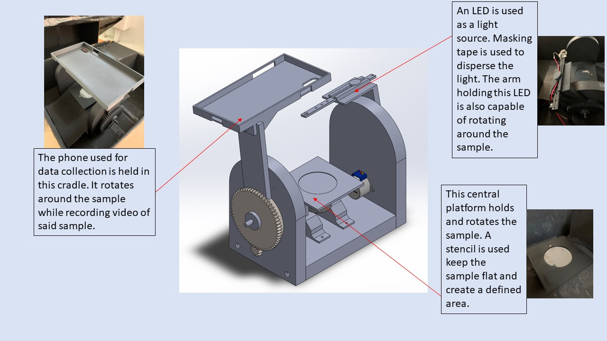
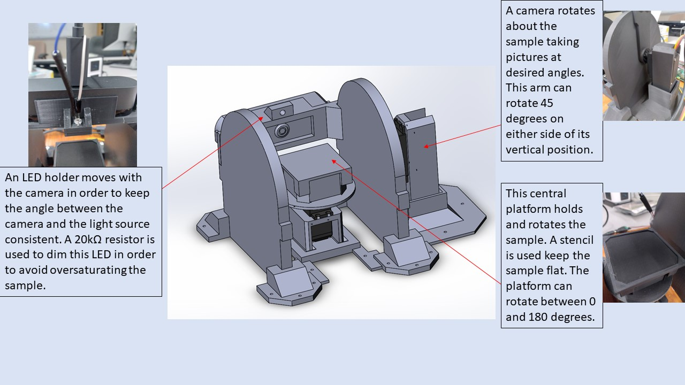
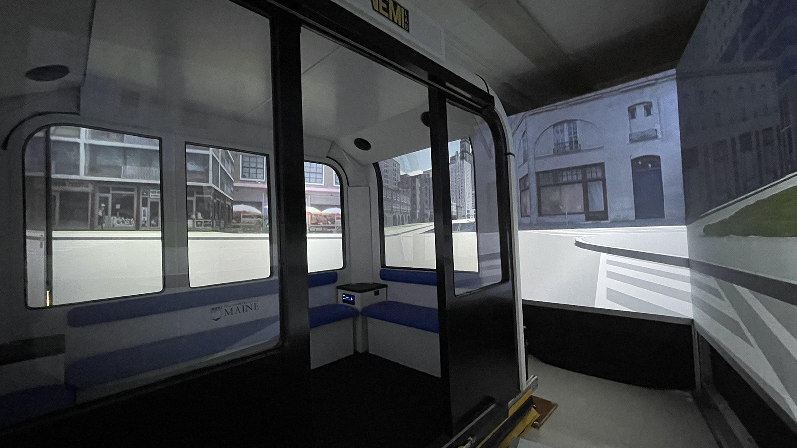

<!DOCTYPE html>
<html lang="en"></html>
<head>
    <meta charset="utf-8">
    <title>
        Theo Erikson's Professional Projects
    </title>
    <link href="style.css" rel="stylesheet" />
  </head>
<body>
    <a class = "home-button" href = "./index.html">Theo Erikson</a>
    <h1>Professional Projects</h1>
    <div class = "container">
        <div class = "grid-items">
            <h2> 
                Nanostructured Material Data Collection Apparatus 1
            </h2>
            
            <p class="fs-secondary">
                TARDIS 1 was used between 2020 and 2022 to collect data pertaining to the behavior of a nano-structured material. Over 350GB of data has been collected using this apparatus thus far. This data and the apparatus itself have contributed to multiple publications. 
            </p>
            <ul class="fs-secondary">
                <h3>Design Challenges</h3>
                <li>Gear catching</li>
                <li>Stepper motors precision</li>
                <li>LED dispersion</li>
                <li>3D printer leveling and filament jams</li>
                <li>Power delivery</li>
                <li>Image/angle association</li>
            </ul>    
        </div>
        <div class = "grid-items">
            <h2>
                Nanostructured Material Data Collection Apparatus 2
            </h2>
            
            <p class="fs-secondary">
                TARDIS 2 is designed to perform the same functions as TARDIS 1 with greater efficiency and ease of use. During design a major focus was placed on modularity in order to better adapt to a variety of research needs. TARDIS 2 has been used to collect preliminary data, but has not yet been fully deployed.  
            </p>
            <ul class="fs-secondary">
                <h3>Design Challenges</h3>
                <li>Friction management</li>
                <li> Image focusing</li>
                <li>Feature selection</li>
                <li>Circuit design</li>
                <li>Structural integrity</li>
                <li>Microcontroller/Library selection</li>
            </ul>
            
        </div>  
    </div>
<div>
    <h2>
        Omnidirectional Immersive Autonomous Vehicle Simulator
    </h2>
    
    <p class="fs-secondary">
        This first of its kind simulator uses four actuators to access three degrees of freedom. Five projectors driven by one computer are used to create a 360 degree immersive environment. The construction of this level 5 autonomous vehicle simulator is a continuation of work based on a US DOT award for inclusive design.
    </p>
    <ul class="fs-secondary">
        <h3>Contributions</h3>
        <li>Projector alignment</li>
        <li>Cable management</li>
        <li>Viewing angle control</li>
        <li>Computer/Hardware selection</li>
        <li>Thermal management</li>
        <li>Pilot/Diagnostic testing</li>
    </ul>
</div>  
</body>
</html>